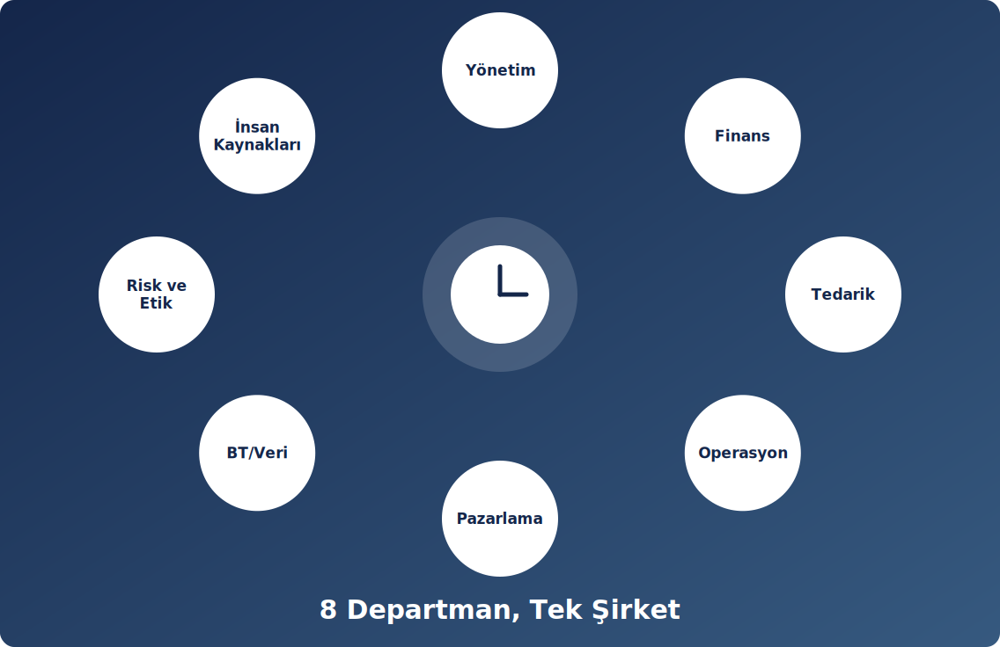

🏛️
Yönetim
Şirket stratejisini, hedefleri ve rol dağılımını belirler; kararların gerekçeli kaydını ve haftalık yönetim raporunu koordine eder.
👤 Eda Uslu
Sekiz departman, tek hedef: dengeli, kârlı ve etik bir şirket.
Şirket stratejisini, hedefleri ve rol dağılımını belirler; kararların gerekçeli kaydını ve haftalık yönetim raporunu koordine eder.
👤 Eda Uslu
Kasa, alacak, borç ve bilançoyu izler; fiyat ve bütçe kararlarının sayısal doğruluğunu kontrol eder.
👤 Recep Ahlatcı
Yedi bileşen için B2B teklifleri oluşturur, sözleşme şartlarını görüşür; acil tedariki son çare olarak kullanır.
👤 Esma Betül Kaya
Müşteri Analitiği Lisansı üretimini, stok takibini ve SmartBox montajını planlar ve yürütür.
👤 Kerem Ünlü
Hedef müşteriyi ve fiyat konumlandırmasını belirler; pazarlama ve kalite bütçesini yönetir.
👤 Hamide Gürgil
Web sitesini, SQL stok veritabanını ve veri altyapısını geliştirir; dijital performansı ve güvenliği sağlar.
👤 Betül Sarıoğlu
Şirket içi rol ve görev dağılımlarını organize eder, ekip üyelerinin performans takibini yürütür ve çalışma disiplinini sağlar.
👤 Safiye Nur Yüce
Şirketin risk matrisini oluşturur; KVKK, veri etiği politikaları ile B2B ve tedarik süreçlerindeki etik standartları denetler.
👤 Yeliz Tunç

Her karar; finans ve operasyon üyelerinin sayısal kontrolünden geçer, gerekçesiyle kaydedilir ve haftalık teslimden önce ekipçe gözden geçirilir.